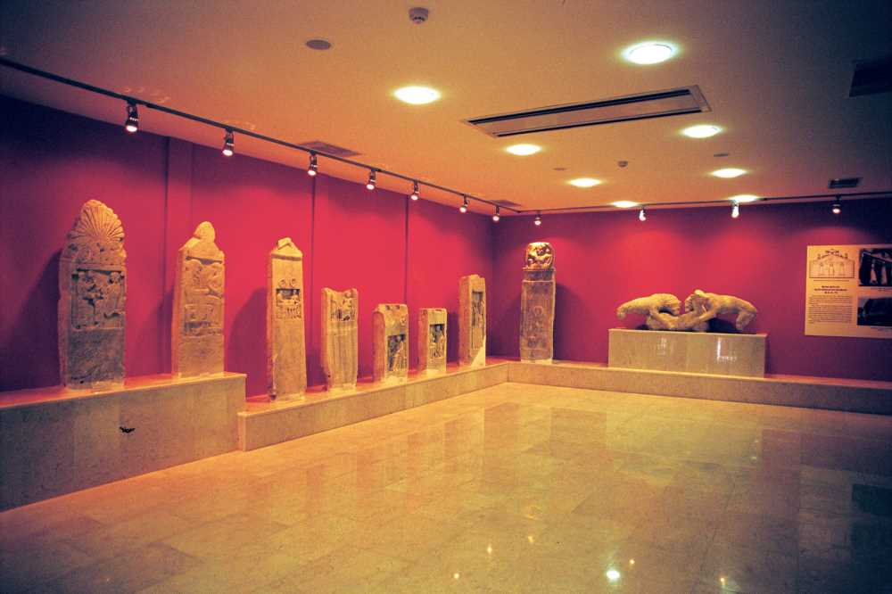
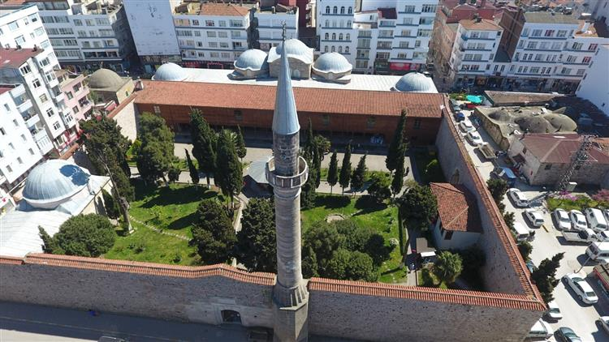
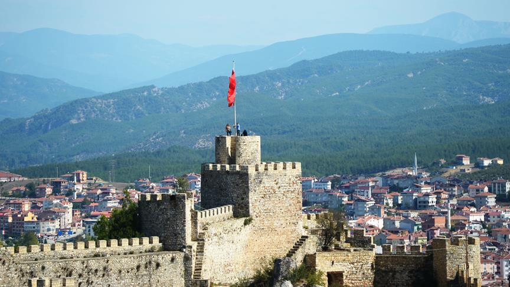
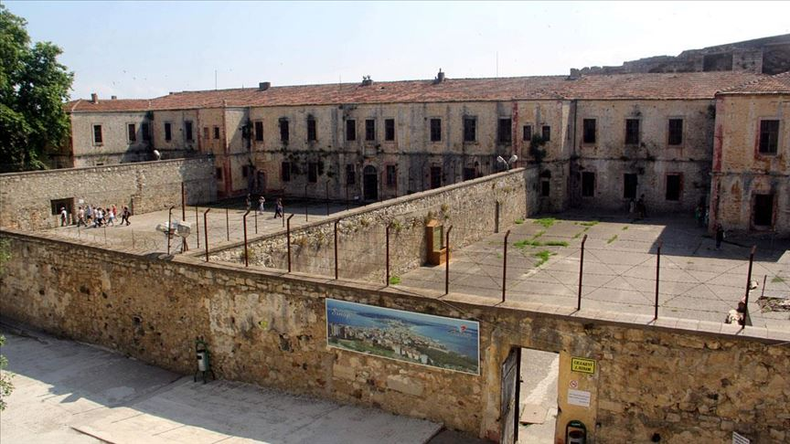

Sinop, Türkiye'nin Karadeniz Bölgesi'nin orta kesiminde bulunan Sinop ili'nin merkezi olan şehirdir. Karadeniz kıyısında, Boztepe Burnu'nun karayla birleşme noktasında yer alır. Sinop Kalesi, tarihi ve turizm açısından kentin en ilginç yeridir.
Antik Çağ'da, Paflagonya bölgesi içinde kalan Sinop'un saptanabilen en eski adı, Sinopedir. Bir söylenceye göre kent adının kurucusu olarak kabul edilen aynı bir Amazon'dan almıştır. Bir başka söylenceye göreyse, kenti eski Yunan'da Irmak Tanrısı Asopos'un su perisi kızlarından Sinope kurmuştur. Söylenceler, MÖ 5-3. yıllara tarihlenmektedir ve aynı döneme ait kent sikkeleri üstünde Sinope'nin başı görülmektedir. Hangi söylence benimsenirse benimsesin, kentin kurucusunun Sinope olduğu kesindir. Ancak, Sinope bir su perisi ise, kentin Yunan kolonicilerce; Amazon ise; Anadolu'nun yerli halklarınca kurulmuş olması gerekir. Bu ikilem, dilbilim çalışmalarıyla bir ölçüde çözülmemiştir: Gerek etimolojisine yabancı olan Sin ya da Sind sözcüklerine Yunanistan'ın dışında daha çok Pontus, Doğu Anadolu Bölgesi, İran ve Hindistan'da rastlanmaktadır. Bu da, Sinope adının yerli Anadolu dillerinde gelmiş olabileceğini göstermektedir. Ünlü Antik Çağ coğrafyacısı Strabon ise, kentin kurucusu olarak, Argonotlar'dan Teselyalı Otolikos'u göstermekte ve onun kenti ele geçirerek bir Yunan kolonisi kurduğu yazmaktadır. "Kentin ele geçirilmesi" kavramı, kolonileştirmeden önce, kent'te yerli bir halkın yaşandığını ortaya koymaktadır. Strabon'un sözünü ettiği gelişmeden sonra, Sinope Kenti MÖ 7. yıllarında bir kez Miletuslular'ca kolonileştirilmistir. Kent'te, sırasıyla Miletoslu Habrındas, Koos ve Krenitas dönemlerinde yerleşilmiştir. Tüm bu söylence ve tarihsel olaylar Sinop'un ilk çağlarda yerli halkça kurulduğunu, bu yerleşimi, söylencesel Argonot seferiyle ilgili olarak bir Yunan kolonisi'nin izlediğini, son olarak da Miletuslular'ın burada bir koloni kurduğunu ortaya koymaktadır. Sinop'u içeren yörenin en eski adı ise "Kaşka Ülkesi" idi. Yöre Hitit Imparatorluk Dönemi'yle çağdaş olan Kaşkalar'ın yaşadıkları topraklarda yer alıyordu. Bu ülke sınırları içindeki küçük "Arauanna Ülkesi de, Sinop yöresinde bulunuyordu.
Sinop Müzesi Sinop şehrinin ve Sinop'un çevresinde ve kazılar sonucunda bulunan tarih eserler sergilenmektedir. Müzede değişik dönemlere ait eserler gösterilmektedir. Bizans, Helenistik, Roma, Prehistorik, Etnografik ve Sinop şehrinin etrafında bulunan ikonlar da müzede sergilenmektedir. 2006 yılında restorasyona alınan Sinop Müzesi ülkede en modern müzelere adını yazdırdı.
Alaaddin Camii Sinop'un Selçuklular tarafından fethinden hemen sonra yapılmıştır, buna göre de bir Selçuklu eseridir. Büyük bir avlusu vardır ve bu avlu güneyde yer alır. Beş kubbesi olan Cami dikdörtgen planı vardır. Şadırvanlı olan ibadethane, şadırvanı avlunun ortasındadır ve bir köşesinde İsfendiyaroğulları'nın türbeleri bulunmaktadır.
Sinop şehrini korumak amacıyla MÖ 7. yüzyılda yarımadanın üzerinde meşhur Sinop Kalesi yapılmıştır. Çeşitli dönemlerde Romalılar, Bizanslılar ve Selçuklu Hanedanı döneminde kale onarılarak kullanıldı. Bugün bile ihtişamını koruya bilen bu kale 2050 m uzunluğunda, 25 m yüksekliğinde, 3 m genişliğinde ve iki tane giriş kapısı bulunmaktadır. Kalenin burçlarını Selçuklu Sultanı I.İzzettin Keykavus 1215-1218 yıllarında yaptırmıştır. Sinop'un güneyinde, iç limana bakan kale deniz kıyısında birbiri içerisine geçmiş olarak iki bölümden meydana gelmiştir.
Şehirdeki en bilinen yapı tarihi Sinop Cezaevidir. Cezaevi iç kalenin içinde eski tersane alanında yapılan bir yapıdır. Cezaevi Osmanlı'nın Karadeniz bölgesindeki en büyük tersanesiydi. Etrafı yüksek kale bedenleriyle çevrilidir ve 1887 yılından beri cezaevi olarak kullanılmaya başlanmıştır. Mahkûmların kaçımı imkânsızdı Sinop Cezaevinden, çünkü dört bir yanı kaleyle çevrili olduğu için. Şu an eski Cezaevi Müze olarak ziyarete açılmıştır. Cezaevini anlatan şiirler Sabahattin Ali'nin kaleminden de çıkmış ve bunlardan "Aldırma Gönül" popüler olmuştur.
Sinop'ta davul, zurna, tef, bağlama, mızıka, tulum ve kemençe çalınır.
Ayancık Eymeleri, Ayancık Çiftetellisi, Muhtar, Karasuda Pazar Var, Munise, Boyabat'ın Pirinci, Derelerde Kuşburnu, Boyabat Çiftetellisi, Karadeniz Horonu ve Tütün ise şehirde oynanan oyunlar arasında.
| Yıl | Yerli | Yabancı | Toplam |
|---|---|---|---|
| 1995 | 76.575 | 8.151 | 84.792 |
| 1996 | 75.286 | 3.506 | 78.792 |
| 1997 | 67.859 | 2.876 | 65.735 |
| 1998 | 61.386 | 1.987 | 63.373 |
| 1999 | 42.483 | 1.312 | 43.795 |
| 2000 | 51.815 | 1.923 | 53.738 |
| 2001 | 71.201 | 3.533 | 74.734 |
| 2002 | 70.358 | 8.366 | 78.724 |
| 2003 | 75.680 | 5.430 | 81.110 |
| 2004 | 67.840 | 3.760 | 71.600 |